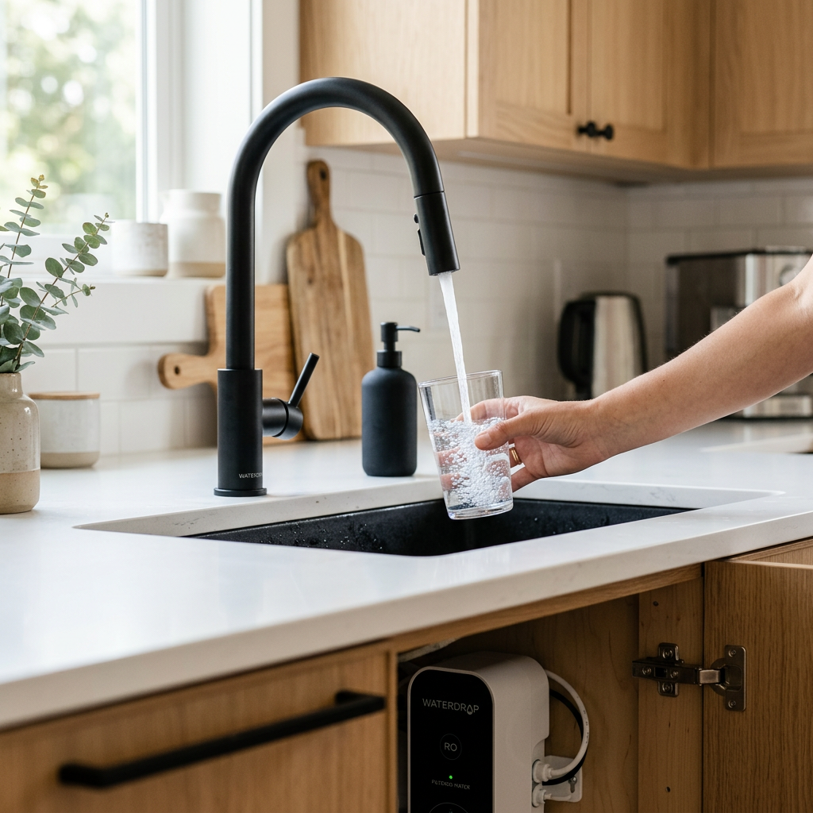
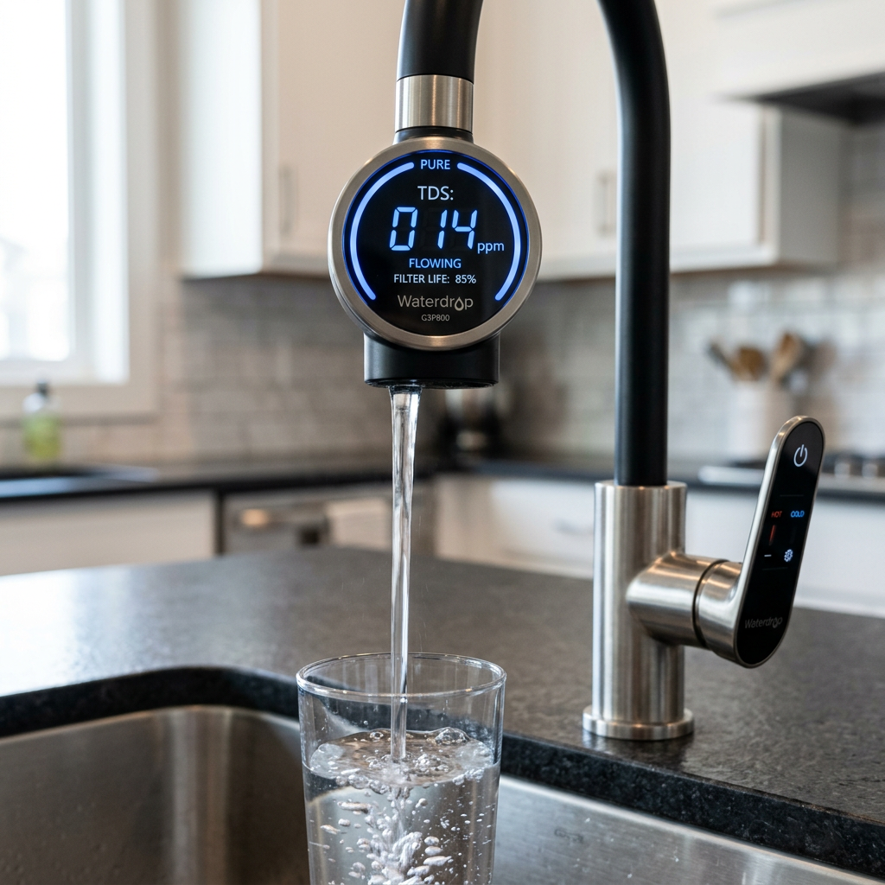

Best Waterdrop Under Sink Filter: G3P800 vs. G2P600 Comparison (2024 Guide)
Best Waterdrop Under Sink Filter: The Ultimate Guide to Pure, Tankless Hydration
Are you still relying on plastic bottled water or a slow, bulky filtration system that takes up half your cabinet space? If you're concerned about PFAS, lead, and chlorine in your tap water, you aren't alone. The problem is that most traditional reverse osmosis systems are slow, wasteful, and require a massive storage tank that eventually grows biofilm.
The solution? A high-performance Waterdrop under sink filter. By switching to a tankless system, you get on-demand purification, a sleek profile, and industry-leading flow rates. But with several models available, which one actually fits your lifestyle? As CRO experts and water quality specialists, we’ve broken down the top three contenders to help you make an informed decision today.

Quick Comparison: Waterdrop RO Systems at a Glance
| Product Model | Flow Rate (GPD) | Pure-to-Drain Ratio | Key Benefit | Verdict |
|---|---|---|---|---|
| Waterdrop G3P800 | 800 GPD | 3:1 | Ultra-Fast Flow & Smart Faucet | Best for Large Families |
| Waterdrop G2P600 | 600 GPD | 2:1 | Compact & Reliable | Best Value for Money |
| Waterdrop G2P600 SE | 600 GPD | 2:1 | Enhanced Special Edition Features | Best for Specific Contaminants |
1. Waterdrop G3P800: The Powerhouse of Purification
If you have a large family or simply hate waiting for your glass to fill, the Waterdrop G3P800 is the gold standard. This system delivers a staggering 800 gallons per day, meaning you can fill a cup of water in just 6 seconds.
Why It Stands Out:
- 9-Stage Filtration: Certified against NSF 58 & 372 to reduce PFAS, Fluoride, Arsenic, and Lead.
- Smart Faucet: The included faucet displays your water's TDS (Total Dissolved Solids) in real-time, so you know exactly how pure your water is.
- Eco-Friendly: With a 3:1 pure-to-drain ratio, it wastes 300% less water than traditional systems.

2. Waterdrop G2P600: The Perfect Balance of Performance and Price
For most households, the Waterdrop G2P600 is the sweet spot. It offers a 600 GPD flow rate—faster than most competitors—while maintaining a compact, tankless footprint that saves 70% more space than traditional RO units.
Key Features:
- 7-Stage Filtration: Effectively removes most harmful contaminants while keeping the system easy to maintain.
- Tankless Design: Eliminates the risk of secondary pollution often found in old-fashioned storage tanks.
- 2-Minute Filter Change: The twist-and-pull design means you don't need a plumber for maintenance.
3. Waterdrop G2P600 Special Edition: Enhanced Reliability
The Waterdrop G2P600 Special Edition takes the proven architecture of the G2P600 and adds specialized filtration capabilities. This model is designed for users who want that extra layer of protection against specific regional water issues.
Why Choose the Special Edition?
- Optimized Filter Life: Advanced composite filters designed to last longer under heavy use.
- Sleek Aesthetics: A refined look that fits perfectly in modern designer kitchens.
- Quiet Operation: Internal dampening makes this one of the quietest under-sink pumps on the market.
The Verdict: Which Waterdrop Under Sink Filter Should You Buy?
Choosing the right waterdrop under sink filter comes down to your household size and your need for speed:
- Choose the G3P800 if you want the absolute best. Its 800 GPD flow rate and smart TDS monitoring faucet make it the most premium experience available today.
- Choose the G2P600 if you want high-end RO filtration on a budget. It is more than enough for a family of four and fits in even the tightest cabinets.
- Choose the G2P600 SE if you are looking for the specific enhancements and reliability of the Special Edition line.
Stop settling for mediocre water. Invest in your health and upgrade to a tankless Waterdrop system today. Your body—and your coffee—will thank you.
Shop Waterdrop RO Systems Now